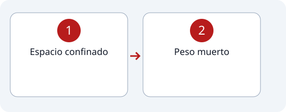

1
Estación #2
Espacio confinado y Peso Muerto.
Recorrido de la estación

Pasos
2
Peso muerto
Levantar y empujar una llanta hasta la marca.
Indicaciones
- Espacio confinado
- * none por el momento
- Peso muerto
- * No se puede usar la rodilla para levantar la llanta, penalización de 2 segundos.
- * Si el levantamiento y empuje se hace correctamente se necesitan 4 vueltas de la llanta para que llegue a la zona asignada.